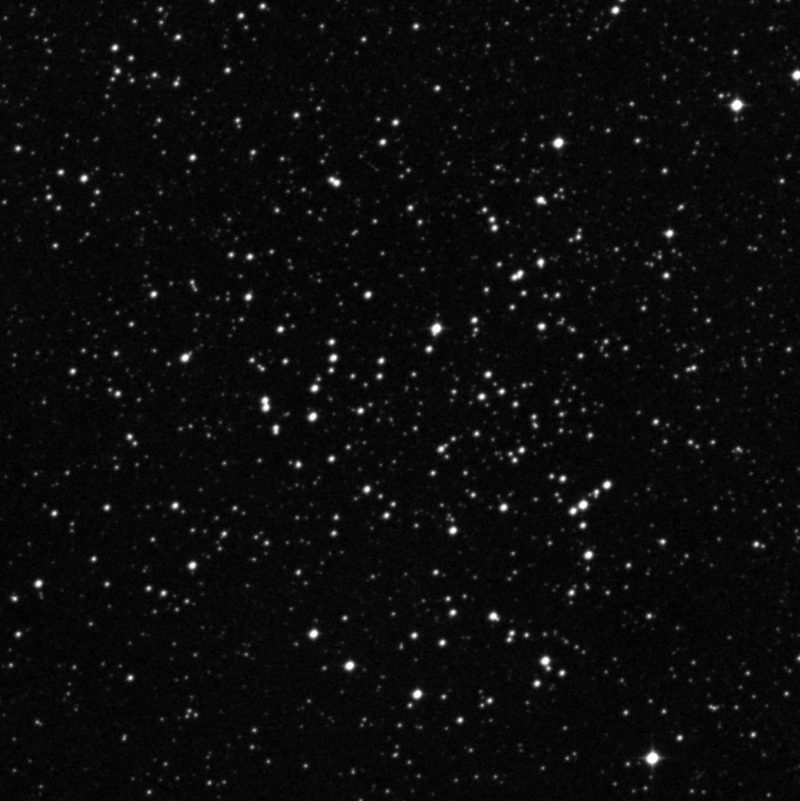
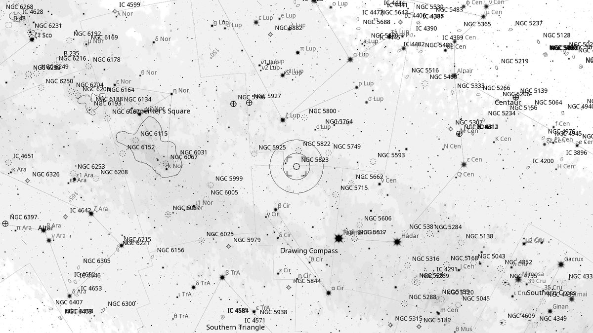
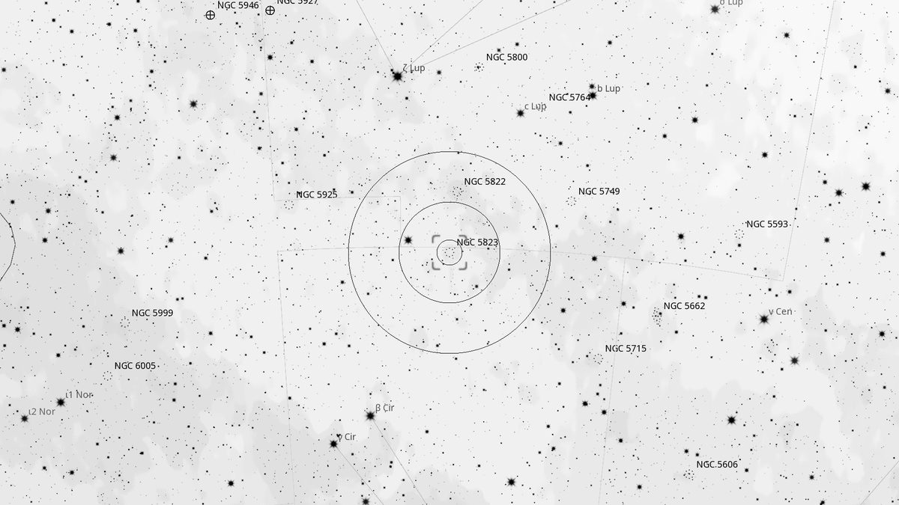
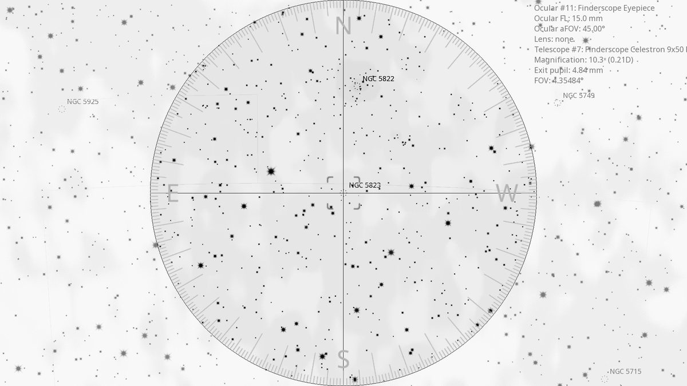
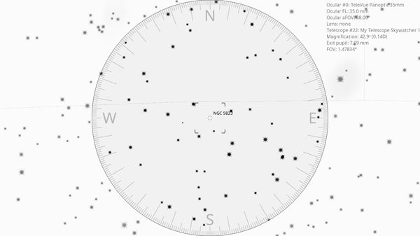

NGC 5823 (OC)
Open Cluster in Circinus
| R.A. | Dec. | Size | Mag | SB | Cnt.St | Type | Distance | Chart |
|---|---|---|---|---|---|---|---|---|
| 15h 05m 33.4s | -55° 35′ 43.2″ | 12.0′ | 7.9 | 13.0 | III2m | OC | -- | -- |

Source: POSS-2 UK Schmidt Red (STScI) | Field: 15′ × 15′
Background
NGC 5823 is a moderately rich open cluster on the Lupus–Circinus border, 3,500 light-years away. Around 800 million years old with 80 known members in a relatively compact 10' disk.
My Observing Notes
25-cm (Meade 10-inch LX200, The Coffee Grinder): In the same finderscope view as NGC 5822 but much smaller (10') and more condensed. A semi-circle of stars forms the top half of the cluster, with loose chains of stars trailing off the bottom — a distinct “stellar jellyfish” floating in space.(Saturday, August 2025)
References
Charts

Ultra-wide view (~25° field)

Wide-field view with Telrad rings (4°, 2°, 0.5°)

Finderscope view (9×50 RACI, ~4.4° TFOV)

Eyepiece view — 35 mm Panoptic on 12-inch f/5 (1.6° TFOV)